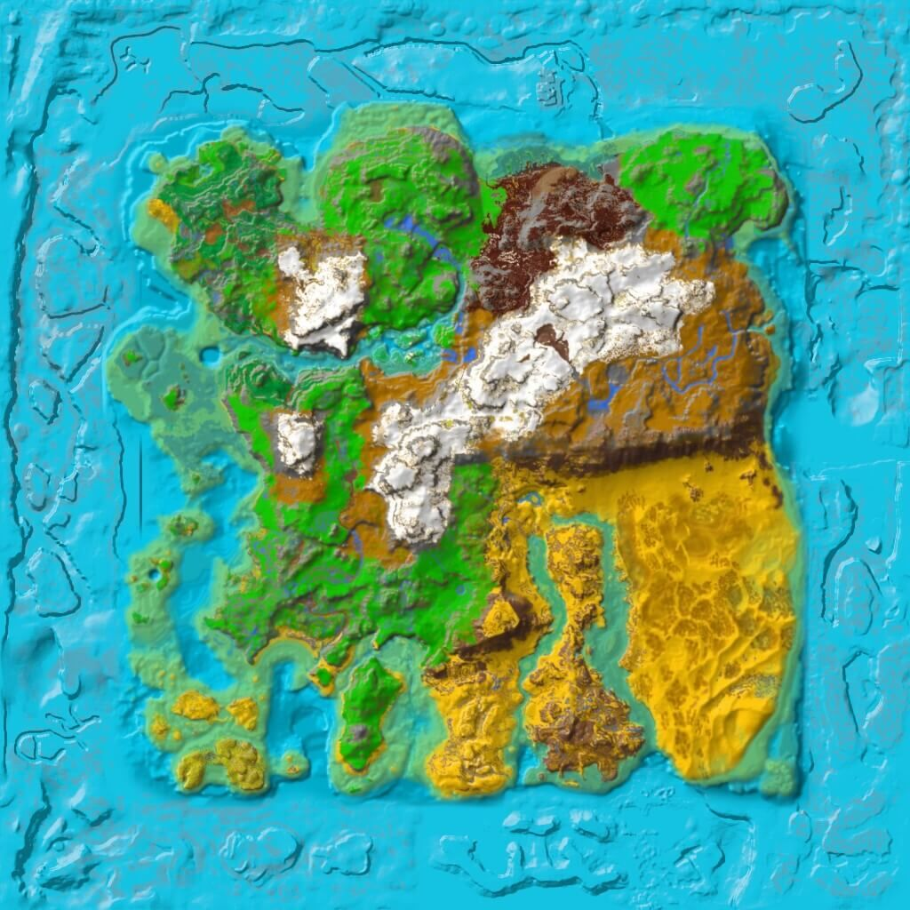

Ragnarok Spawn Map Regions (Lands)
Mobile App users need to view this page in a browser to use the map fully.
Mouse over the squares for their coords.
DinoSpawnEntries_Ragnarok_Castle
DinoSpawnEntries_Ragnarok_Center
DinoSpawnEntries_Ragnarok_Jungle
DinoSpawnEntries_Ragnarok_MonkeyIsland
DinoSpawnEntries_Ragnarok_Mudslide
DinoSpawnEntries_Ragnarok_Scotland
DinoSpawnEntries_Ragnarok_SnowForest
DinoSpawnEntries_Ragnarok_SnowPlains
DinoSpawnEntriesBeach
DinoSpawnEntriesDamiensAtoll
DinoSpawnEntriesGrassland
DinoSpawnEntriesMonsterIsland
DinoSpawnEntriesMountain
DinoSpawnEntriesRedwoods
DinoSpawnEntriesSnow
DinoSpawnEntriesSwamp
SE_DinoSpawnEntriesBadlands
SE_DinoSpawnEntriesCanyons
SE_DinoSpawnEntriesDunes
SE_DinoSpawnEntriesGreenDesert
SE_DinoSpawnEntriesMountain
SE_DinoSpawnEntriesOasis

Creature spawn locations on Ragnarok